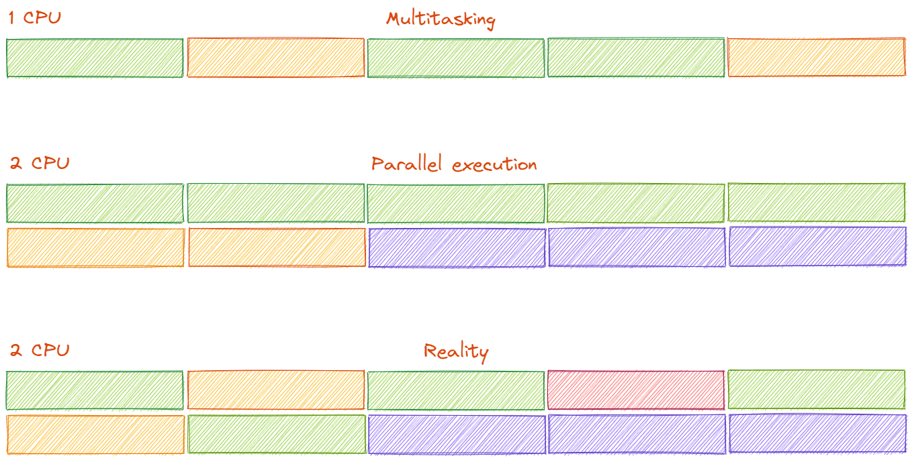

Wprowadzenie do programowania wielowątkowego#
Concurrency is about dealing with lots of things at once.
Parallelism is about doing lots of things at once.
Not the same, but related.
One is about structure, one is about execution.
Concurrency provides a way to structure a solution to solve a problem that may (but not necessarily) be parallelizable.
—Rob Pike, co-inventor of the Go language
Współbieżność - Concurrency#
Współbieżność (ang. Concurrency) odnosi się do zdolności systemu do obsługi wielu zadań jednocześnie. Oznacza to, że system może przełączać się między różnymi zadaniami, sprawiając wrażenie, że są one wykonywane równolegle. W rzeczywistości zadania mogą się przeplatać, ale niekoniecznie są wykonywane w tym samym czasie (maszyna jednoprocesorowa + OS scheduler = multitasking).

Równoległość - Parallelism#
Równoległość (ang. Parallelism) oznacza jednoczesne wykonywanie wielu zadań. Jest to możliwe dzięki wykorzystaniu wielu procesorów lub rdzeni, które współpracują ze sobą nad różnymi częściami problemu. Równoległość ma na celu przyspieszenie przetwarzania poprzez podzielenie zadania na mniejsze podzadania, które są wykonywane równocześnie.
Proces#
Proces to podstawowa jednostka pracy w systemie operacyjnym. Proces jest uruchomioną instancją programu, która zawiera kod programu oraz aktualny stan jego wykonania. Proces może być uruchomiony przez użytkownika lub system, a także może tworzyć inne procesy, które nazywają się procesami potomnymi (child processes).
Współczesne systemy operacyjne zarządzają setkami procesów, które są jednocześnie uruchomione.
Za zarządzanie procesami odpowiada jądro systemu operacyjnego (process scheduler). Scheduler decyduje, który proces wykonuje swoje zadania w przydzielonym przedziale czasu. System operacyjny zarządza także priorytetami procesów.
Struktura procesu (POSIX)#
Proces składa się z kilku kluczowych elementów:
Identyfikator procesu (PID): Unikalny identyfikator przypisany do każdego procesu.
Konto użytkownika: Informacje o użytkowniku, który uruchomił proces, takie jak identyfikator użytkownika (UID) i grupa (GID).
Kody wyjścia: Informacje o zakończeniu procesu, w tym kod wyjścia wskazujący sukces lub niepowodzenie.
Segment kodu: Sekcja pamięci zawierająca instrukcje programu do wykonania.
Segment danych: Sekcja pamięci przechowująca zmienne globalne i dane statyczne.
Segment stosu: Obszar pamięci używany do przechowywania zmiennych lokalnych i informacji o wywołaniach funkcji.
Sterta: Dynamiczny obszar pamięci używany do alokacji dynamicznych zasobów w trakcie działania programu.
Tablica deskryptorów plików: Lista otwartych plików i urządzeń, z którymi proces może się komunikować.
Sposoby komunikacji między procesami#
Procesy są izolowane. Dotyczy to także procesów potomnych. W rezultacie procesy mogą komunikować się między sobą przy pomocy mechanizmów IPC (Inter-Process Communication). Najpopularniejsze metody komunikacji między procesami to:
Sygnały (Signals)
Sygnały są asynchronicznymi komunikatami wysyłanymi do procesów w celu powiadomienia o zdarzeniach. Pozwalają procesom na przesyłanie krótkich powiadomień o zdarzeniach, takich jak prośby o zakończenie, zawieszenie, lub obsługę specjalnych warunków.
Pamięć współdzielona - Shared Memory
Procesy mogą dzielić segmenty pamięci, co umożliwia szybki dostęp do wspólnych danych (
shm_open,mmap)
Gniazda (Socketów)
Gniazda umożliwiają komunikację między procesami na tym samym komputerze lub w sieci.
Potoki (Pipes) i potoki nazwane (Named Pipes)
Potoki umożliwiają jednokierunkową komunikację między procesami. Potoki nazwane mogą być używane przez procesy niepowiązane ze sobą.
Kolejki komunikatów (Message Queues)
Kolejki komunikatów umożliwiają przesyłanie komunikatów między procesami (
mq_open,mq_send).
Wątek - Thread#
Wątek (ang. Thread) to jednostka wykonawcza w ramach procesu. Proces może składać się z jednego lub wielu wątków, które współdzielą zasoby procesu, takie jak pamięć i deskryptory plików. Każdy wątek posiada swój własny stos oraz rejestry, co pozwala mu na niezależne wykonywanie zadań.
Wszystkie wątki działające w danym procesie współdzielą przestrzeń adresową oraz zasoby systemowe przydzielone procesowi. Dzięki temu wątki w obrębie procesu mają łatwy dostęp do:
pamięci (heap, static storage)
plików otwartych przez aplikację
gniazd (sockets)
itp.
Zasobem, który wątki nie współdzielą jest stos (stack). Każdy utworzony wątek posiada własny stos, na którym alokowane są lokalne zmienne funkcji wywołanej w tym wątku.
Wątki są udostępniane i kontrolowane przez system operacyjny. Natywne biblioteki umożliwiające zarządzanie wątkami to:
MS Windows – Win32 API
Linux, BSD - pthread
Proces czy wątek?#
Procesy:
są niezależne (izolowane)
mają oddzielne przestrzenie adresowe
komunikują się ze sobą za pośrednictwem IPC
proces może zostać uruchomiony na innym komputerze (lepsza skalowalność)
jeśli stabilność jest istotna, należy użyć procesów
jeśli wykorzystywane są zasoby, które są dostępne tylko na zasadzie „jeden dla procesu”, należy wybrać proces
Wątki:
należą do procesu
dzielą przestrzenie adresowe - z wyjątkiem stosu
koszt przełączania kontekstu jest mniejszy dla wątków
komunikacja wewnątrz wątków jest mniej kosztowna niż komunikacja międzyprocesowa
jeśli wątki wymagają zasobów, które nie mogą być użyte przez wiele procesów jednocześnie, należy korzystać z wątków
Przełączanie kontekstu - Context Switch#
Przełączanie kontekstu (ang. Context Switch) to proces, w którym system operacyjny przełącza CPU z wykonywania jednego wątku lub procesu na inny. Przełączanie kontekstu jest niezbędne w systemach wielozadaniowych, gdzie wiele procesów lub wątków jest wykonywanych równolegle, aby zapewnić efektywne wykorzystanie zasobów procesora.
Kroki przełączania kontekstu#
Zapisywanie stanu bieżącego procesu: Stan bieżącego procesu, w tym jego rejestry procesora, licznik programu, wskaźnik stosu i inne informacje, musi być zapisany w strukturze danych zwanej deskryptorem procesu.
Zmiana kontekstu: System operacyjny zmienia stan CPU na stan nowego procesu lub wątku, który ma zostać wykonany.
Przywracanie stanu nowego procesu: Stan nowego procesu, w tym jego rejestry procesora, licznik programu, wskaźnik stosu i inne informacje, jest przywracany z deskryptora procesu.
Wznowienie wykonania: Nowy proces lub wątek zaczyna swoje wykonywanie od punktu, w którym został wcześniej zatrzymany.
Rodzaje przełączania kontekstu#
Przełączanie kontekstu procesów: Obejmuje przełączanie pomiędzy różnymi procesami, co zwykle jest bardziej kosztowne, ponieważ wymaga przełączania między różnymi przestrzeniami adresowymi.
Przełączanie kontekstu wątków: Obejmuje przełączanie pomiędzy wątkami tego samego procesu, co jest zazwyczaj mniej kosztowne, ponieważ wątki współdzielą przestrzeń adresową.
Koszty przełączania kontekstu#
Przełączanie kontekstu jest operacją kosztowną w sensie zużycia zasobów systemowych. Wprowadza pewne opóźnienia i zużywa zasoby CPU, co może wpłynąć na ogólną wydajność systemu. Dlatego systemy operacyjne starają się minimalizować częstotliwość przełączania kontekstu, zachowując równowagę pomiędzy responsywnością systemu a wydajnością.
Programowanie współbieżne - zalety i wady#
Po co używać współbieżności#
Rozdzielenie odpowiedzialności
Grupowanie (wydzielanie) logicznie spójnego kodu
Rozdzielanie odrębnych operacji, gdy mają się odbywać w tym samym czasie
Wydajność
“The free lunch is over” – Herb Sutter
Chcemy wykorzystać całą moc maszyny wieloprocesorowej (wielordzeniowej)
Chcemy podnieść skalowalność aplikacji
Podział zadań na części i wykonywanie równolegle (dekompozycja problemu może być trudna)
Lepsza responsywność aplikacji
Unikanie blokujących operacji I/O
Blokowanie interfejsu użytkownika
Kiedy nie używać współbieżności?#
Należy unikać wielowątkowości, gdy korzyści nie są warte kosztów:
Kod wielowątkowy jest dużo bardziej skomplikowany - trudniejszy do pisania, czytania i testowania niż kod jednowątkowy
Większa złożoność kodu, przekłada się na większą ilość błędów (bugów), które są trudne do wykrycia (często trudne do odtworzenia)
Narzuty związane z zarządzaniem wątkami mogą drastycznie obniżyć wydajność (context switching, cache ping-pong, false sharing)
Gdy zbyt wiele wątków jest uruchomionych jednocześnie
zużycie zasobów systemu operacyjnego
system jako całość będzie działał wolniej
Testowanie aplikacji wielowątkowych#
Kod jednowątkowy może być testowany jednostkowo (unit tests)
Powtarzalne wyniki dla testów wykonywanych w izolacji
Kod wielowątkowy jest trudno testowalny jednostkowo
Błędy (np. race conditions) nie są deterministyczne i są ciężko reprodukowalne
Problemy pojawiają często przy dużym obciążeniu lub zwielokrotnieniu wątków
Dobrze jest zapewnić możliwość skalowania ilości wątków do jednego (single threaded code) aby wykluczyć inne przyczyny błędów